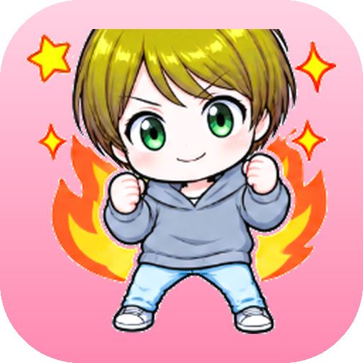

▶ アプリを開く
インストールの作業は要りません。上の「▶ アプリを開く」を押せば、その場ですぐ使えます。
毎日使うなら、下のやり方でアイコンとして置いておくと便利です。
デスクトップとスタートメニューにアイコンが並びます。
次からはそれを押すだけ。アドレスバーやタブのない、アプリ専用の窓で開きます。
ホーム画面にアイコンが増えます。
アプリを開いた状態で、キーボードの Ctrl と D を同時に押すと、お気に入りに登録できます。
一度開いておけば、次からは電波の無いところでも使えます。
これはパソコンにソフトを入れる作業ではなく、お気に入り登録に近いものです。
Windows の青い警告画面やウイルス対策ソフトの警告が出ることはありません。
お友だちに渡すときも、ファイルを送るのではなくこのページのリンクを送るだけで大丈夫です。
これだけで「あと○○kg」とグラフが自動で新しくなります。
入れた体重も写真も、あなたの端末の中だけに保存されます。
私にも他の誰にも見えません。